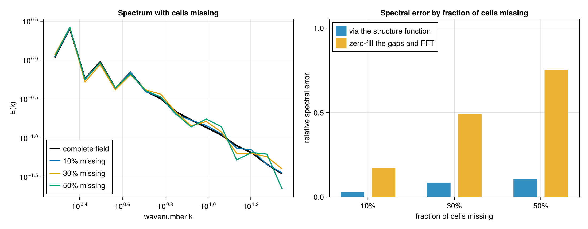
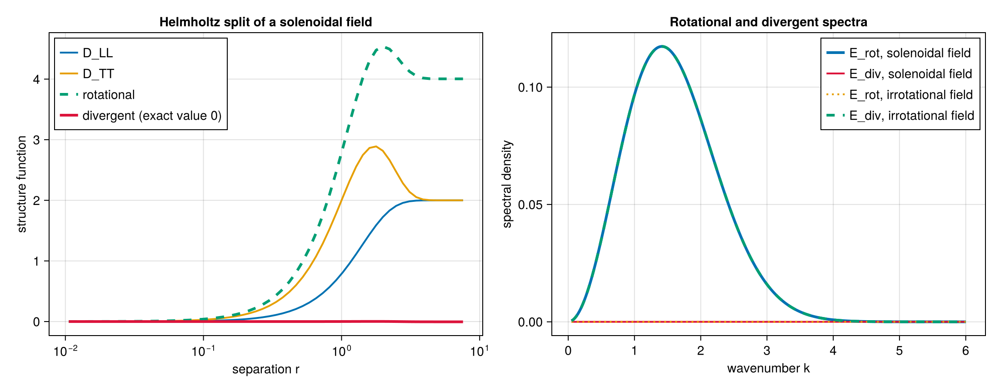
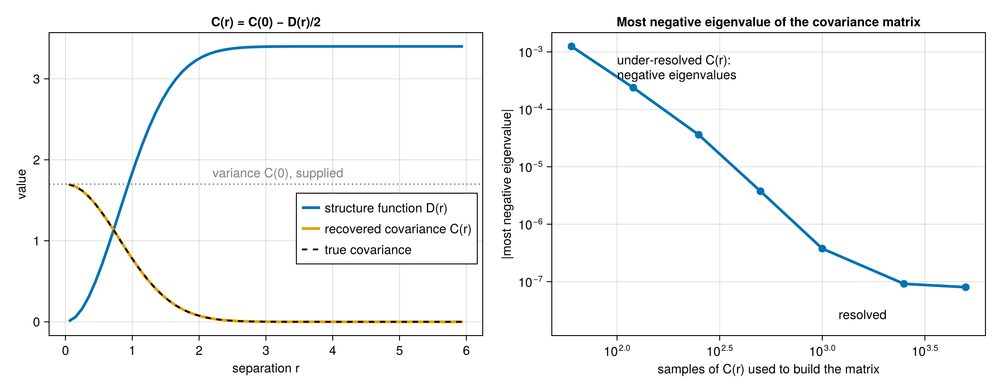
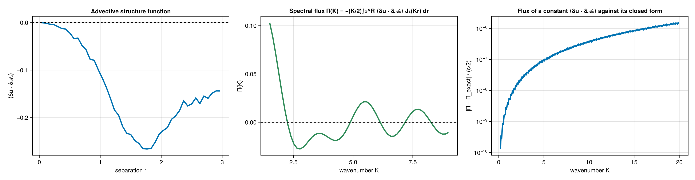
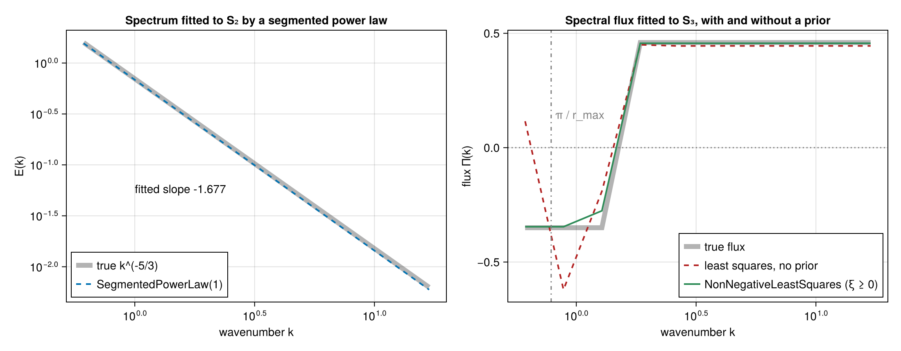

Spectra, fluxes, and fitting
A transform of a structure function assumes a relationship between the sampled statistic and the target spectrum or flux: the dimension, isotropy, the separations covered and the normalization all enter it. Each function below states its assumptions in its reference entry.
Spectra
isotropic_spectrum(result, k, Val(D); variance) transforms the second-order trace S2SF into the spectral density of an isotropic field in D = 1, 2, 3 dimensions, normalized so that shell_spectrum integrates over k to the variance. variance is the field's variance, summed over the components of a vector field: twice it is the limit the structure function approaches at large separation, which the transform subtracts before the integral stops at the last separation. The integral runs from zero separation, where the structure function vanishes, by the trapezoid rule. The two-dimensional kernel needs Bessels.
using StructureFunctions: Calculations as SFC, StructureFunctionTypes as SFT
σ2, ℓ = 1.7, 0.8
r = collect(range(0.0, 16.0; length = 4000))
s2 = @. 2σ2 * (1 - exp(-r^2 / (2ℓ^2))) # S₂ of a Gaussian correlation
k = collect(range(0.1, 6.0; length = 60))
P = SFC.isotropic_spectrum(SFT.S2SFType(), r, s2, k, Val(3); variance = σ2)
exact = @. σ2 * ℓ^3 * exp(-k^2 * ℓ^2 / 2) / (2π)^(3 / 2)
maximum(abs, P .- exact) / maximum(exact)1.1336354521147872e-15On a grid, gridded_spectrum(u, schedule, Val(D), tag) gives the spectrum through the lag-space correlation of the grid's own pairs, and shell_average reduces it to shells in |k|. With cells missing it is an estimate from the pairs that remain.


equivalent_spectrum(result, Val(D)) estimates the spectrum from the structure function's derivative, with no transform and no variance (Bishop et al. 2026): Ẽ(k_e) = r² S₂′(r) / 2b at k_e = b/r, b = √(2D − 2) (1 on a line), and the same divided by the bias of a power law of the local slope. D is the dimension of the space the separations are measured in. The bias needs Bessels.
using Bessels: Bessels
β, A = 5 / 3, 1.0
r = exp.(range(log(1e-2), log(10.0); length = 400))
I3 = Bessels.gamma(3 - β) * sin(π * β / 2) / (-β * (1 - β) * (2 - β))
e = SFC.equivalent_spectrum(SFT.S2SFType(), r, @.(2A * I3 * r^(β - 1)), Val(3)) # S₂ of A k^-β in 3-D
maximum(abs, e.debiased[3:end-2] ./ (A .* e.wavenumber[3:end-2] .^ -β) .- 1)The Helmholtz split
In two dimensions the longitudinal and transverse second-order functions separate the rotational and divergent parts of the field: D_rot = D_TT + I and D_div = D_LL − I, with I(r) = ∫₀^r (D_TT − D_LL)/s ds. helmholtz_decompose_2d evaluates the integral from zero separation by the trapezoid rule over the bin midpoints; the single-pass calculation returns it for point fields. helmholtz_spectra(L2, T2, k; variance) and helmholtz_spectra(h, k; variance) transform both parts to spectra: the trace by J₀ with the field's variance, and D_LL − D_TT, which decays on its own, by J₂.

Covariance
For a second-order stationary field C(r) = C(0) − D(r)/2. covariance(result, variance) returns C(r) given the variance, which the structure function does not contain. covariance_matrix(points, separations, C) evaluates the covariance at every pair of points and checks the matrix for positive semi-definiteness; a covariance function sampled too coarsely fails the check.

Spectral fluxes
spectral_flux(result, K) evaluates the scale-to-scale flux from the advective structure function ⟨δu · δ𝓐ᵤ⟩ (VectorDotSFType(1, 2) on Fields(vectors = (u, 𝓐u))) through Π(K) = −(K/2)∫₀^R ⟨δu · δ𝓐ᵤ⟩ J₁(Kr) dr, and from the third-order functions S3SFType, L3SFType and MixedSFType{1,0,2} with the boundary term each relation leaves at the last separation. enstrophy_flux gives the enstrophy flux of a two-dimensional flow from the same advective structure function. The integrals run from zero separation by the trapezoid rule and need Bessels.

Fitting
A fit compares the measured structure function with a forward model of a spectrum or a flux on chosen wavenumber bins:
SpectrumForwardModelmaps a shell spectrum toS2,HelmholtzForwardModelthe gradient and curl spectra toD_LLandD_TT, andFluxForwardModela piecewise-constant flux toS3.fit_spectrum,fit_helmholtz_spectraandfit_fluxbuild the model and solve it withRegularizedLeastSquares(prior)(with a data covarianceW, returning the posterior covariance),NonNegativeLeastSquares(), or aSegmentedPowerLaw(withLsqFit).tradeoff_curvereports the residual and the solution norm across prior strengths;select_segmentspicks the segment count with the smallest residual.independent_pair_variance(joint)estimates the variance of each bin's mean from a value-binned joint histogram with integer counts, assuming independent pairs. Pairs sharing a point are correlated, which it does not account for, and the spread inside a value cell is unseen, so the result is a lower bound.- A result with batch axes is fitted slice by slice;
Wis one covariance for all slices or aSliceCovariances.

Validation lists the analytic checks behind each of these functions.